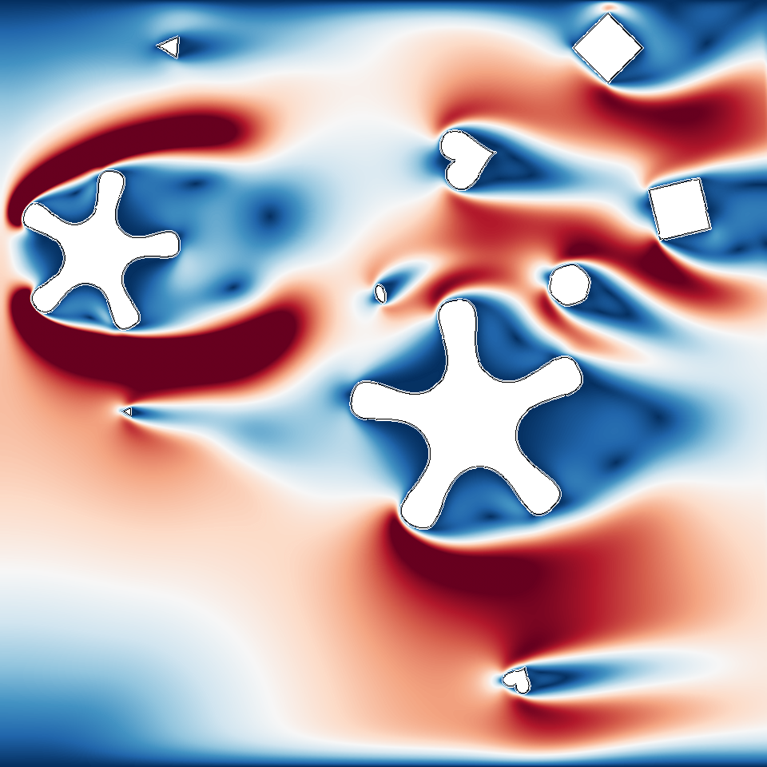
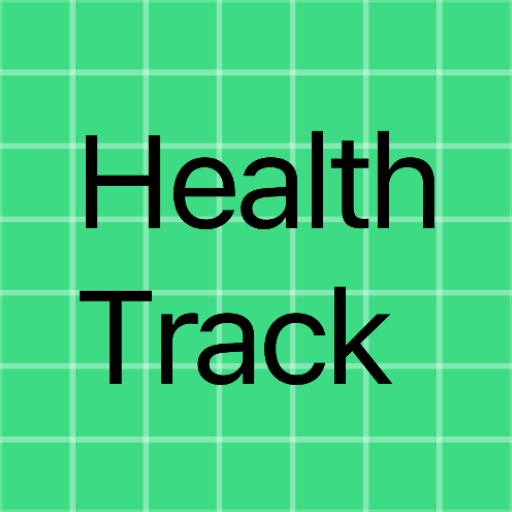
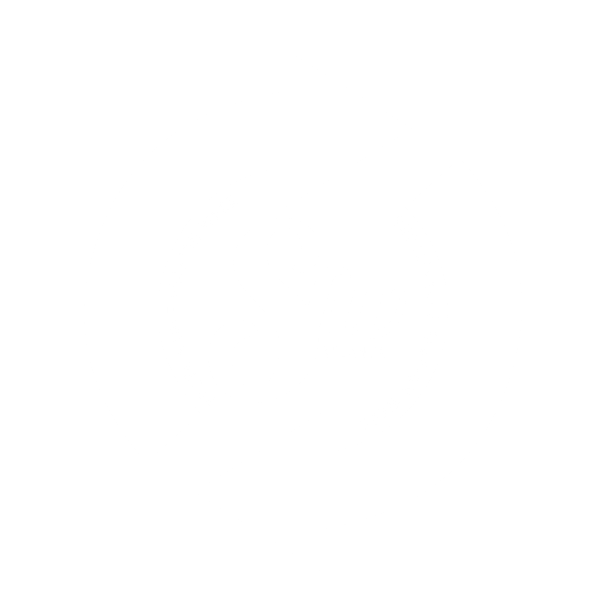
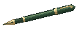

NOX_ZENG / PERSONAL WEBSITE
Computer Science @ Georgia Tech
M.S. · Machine Learning
01 / INTRO
About Me
I’m Nox, a Computer Science master’s student at Georgia Tech, where I also earned my B.S. I focus on machine learning and am currently researching RSI. I also have a first-author paper under review at NAACL. My work with LLM agents and reinforcement learning includes an AI internship at ZTE, where I built distributed training pipelines for multi-turn agents. I’m currently in team matching for Google’s 2027 SWE internship. Outside of CS, I enjoy reading, Polaroid and film photography, drawing and painting, and visiting historic sites, especially ancient tombs.
02 / SELECTED PROJECTS
Projects
ML & AI
-
Check whether a paper’s claims match its code. Upload an ML paper and link its GitHub repo to get verdicts backed by paper passages and code lines, mismatch explanations, and optional reference tests.
PYTHON · FASTAPI · REACT · PGVECTOR Verification example -

LBM Fluid Simulation
A 2D fluid solver with randomized obstacles, built to produce varied simulation data for machine learning.
PYTHON · LBM · MACHINE LEARNING
SWE
-
A NASA API dashboard with real-time ISS tracking, 2D/3D maps, asteroid statistics, and an astronomy picture of the day.
VUE · TYPESCRIPT · CESIUMJS · NASA APIs -

HealthTracker
Log calories, track workouts, and join community challenges with role-based features and a clear view of your progress.
MOBILE · MVVM · COMMUNITY -

ATLSFW
Connecting people with sustainable fashion, local makers, and the stories behind what we wear.
MOBILE · SUSTAINABILITY · ROLE-BASED UX
C & Systems

04 / KNOW MORE ABOUT ME
Interests
01
Reading
I read a bit of everything, but history books are my favorite.
Lately I’ve been puzzling over Nabokov’s Pale Fire.
02
Polaroid & Film
I love Polaroid and film photography for the surprises, including the occasional “oh no.”
While I’m waiting for a photo to develop, I never quite know what I’m going to get. I like that uncertainty and the excuse to experiment.
View my Polaroids
03
Drawing & Painting
With watercolor, I love seeing how water and pigment spread and blend on cotton paper. Changing the amount of water or the mix of colors can lead to very different results.
I also enjoy drawing and painting with other materials.
04
Historic Sites
I like visiting historic sites of all kinds, especially ancient tombs. There’s a lot to learn from the architecture, carvings, and inscriptions.
I have a lot of respect for the people resting there, so I try to be a good guest and leave everything as I found it.
to you,
who found your way here.